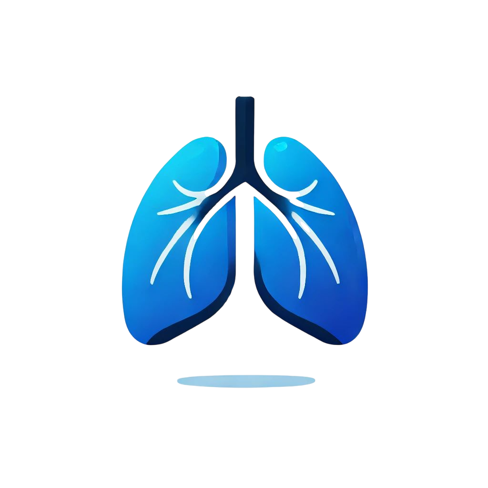
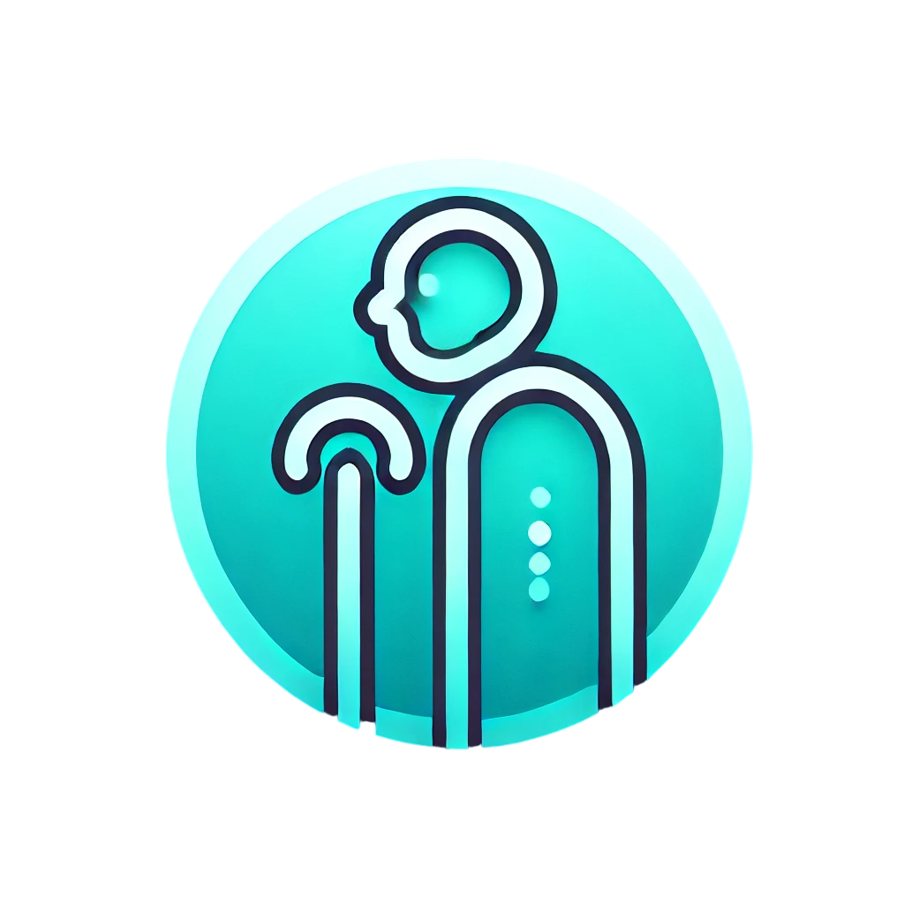
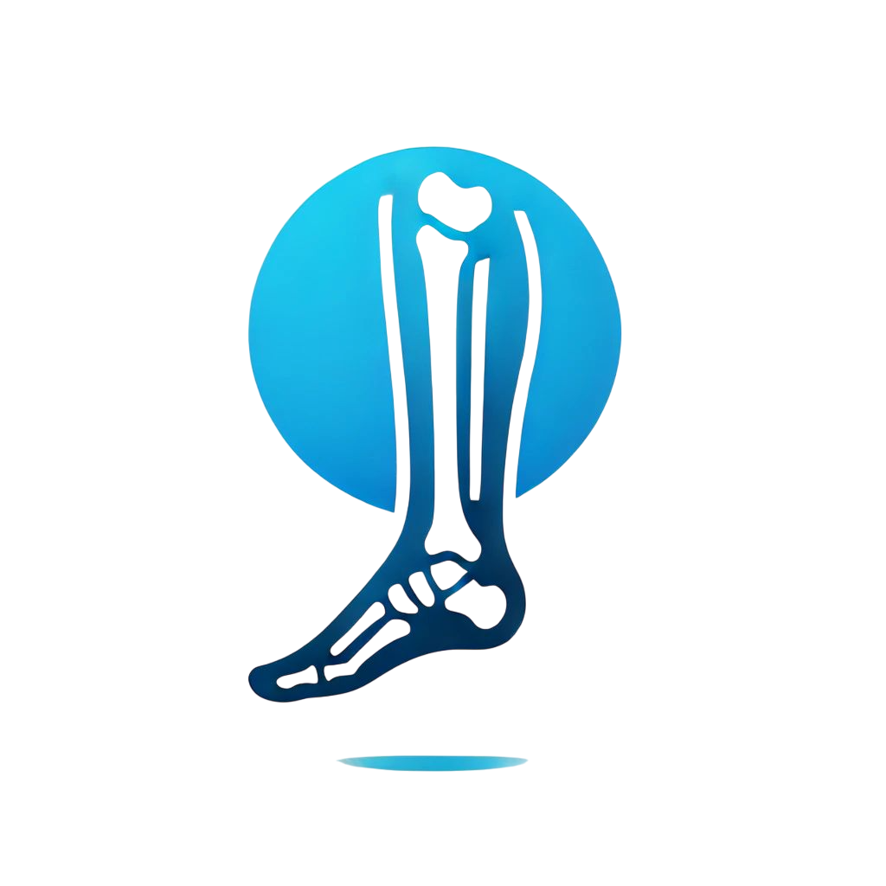

Nuestros Servicios
La fisioterapia neurológica se centra en el tratamiento de personas con trastornos del sistema nervioso. Estos trastornos pueden incluir enfermedades como el accidente cerebrovascular, la esclerosis múltiple, el Parkinson, las lesiones medulares, entre otras.
+ info

La fisioterapia respiratoria ayuda a mejorar la función pulmonar y la capacidad respiratoria en pacientes con enfermedades respiratorias.
+ info

La fisioterapia geriátrica se especializa en el cuidado de personas mayores, ayudando a mejorar su movilidad y calidad de vida.
+ info

La fisioterapia traumatológica se centra en la rehabilitación de lesiones musculoesqueléticas causadas por traumatismos.
+ info
¿Necesitas más información?
Si tienes alguna pregunta o necesitas más detalles sobre nuestros servicios, ¡no dudes en contactarnos!
Contáctanos